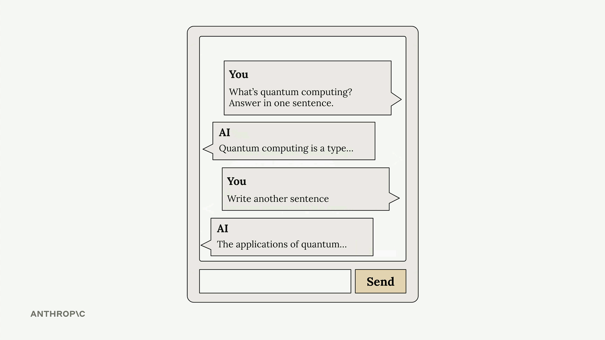
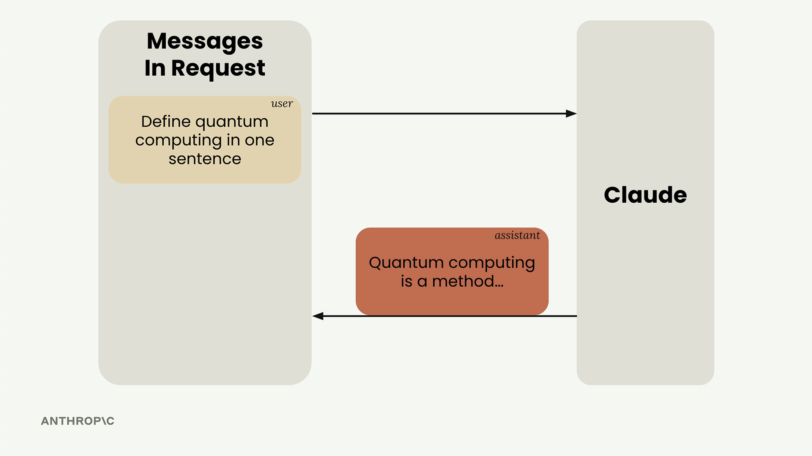
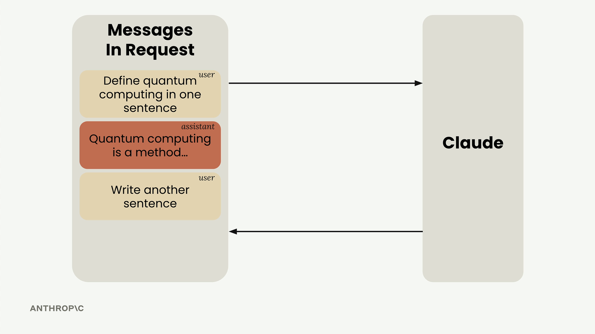

Диалог из нескольких ходов
Чему научитесь
Около 9 минут
К концу урока вы сможете:
- объяснить, что Claude не хранит историю между запросами;
- собрать список сообщений и отправлять его целиком;
- пользоваться функциями
add_user_message,add_assistant_messageиchat.
Каждый запрос сам по себе
Видео и схемы урока.
Смотреть урок на Skilljar Multi-turn conversationsClaude не хранит историю разговора. Каждый запрос независим. Если нужен диалог, состояние держите вы.

Что ломается без истории
Спросили «What is quantum computing?», получили ответ, потом пишете «Write another sentence». Без прошлой реплики Claude не знает, к чему это «ещё одно предложение», и напишет что-то своё.

Как устроен многоходовый разговор
Нужны две вещи: самому держать список сообщений и каждый раз отправлять его целиком.
- Отправить первое сообщение пользователя.
- Ответ Claude добавить в список как assistant.
- Добавить следующий вопрос как user.
- Отправить весь список.


Три функции из урока
def add_user_message(messages, text):
user_message = {"role": "user", "content": text}
messages.append(user_message)
def add_assistant_message(messages, text):
assistant_message = {"role": "assistant", "content": text}
messages.append(assistant_message)
def chat(messages):
message = client.messages.create(
model=model,
max_tokens=1000,
messages=messages,
)
return message.content[0].text
Как ими пользоваться
# Start with an empty message list messages = [] # Add the initial user question add_user_message(messages, "Define quantum computing in one sentence") # Get Claude's response answer = chat(messages) # Add Claude's response to the conversation history add_assistant_message(messages, answer) # Add a follow-up question add_user_message(messages, "Write another sentence") # Get the follow-up response with full context final_answer = chat(messages)
Теперь «Write another sentence» продолжает определение квантовых вычислений: в запросе есть вся переписка.
Эти три функции курс использует и дальше.
Дальше
Упражнение собирает из них цикл, который спрашивает ввод в ячейке ноутбука.
Оригинал урока: Multi-turn conversations.